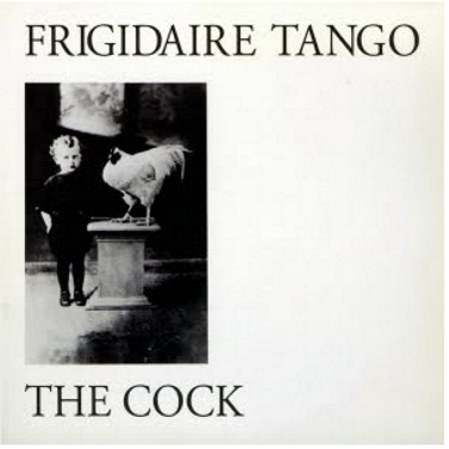

← Discografia

1981
The Cock
L'LP d'esordio, registrato nel 1981 e pubblicato da Young Records. Spittle Records lo ha ristampato nel 2014 e apre The Freezer Box (2006). Le durate vengono dall'edizione digitale del 2006.
AscoltaThe Cock (Deezer) ↗
Brani
- 1Dangerous Echo3:13Deezer
- 2Any Time You Dress So Fine2:56Deezer
- 3Blue & Pink5:30Deezer
- 4Push1:49Deezer
- 5Frigidaire Tango4:40Deezer
- 6I'm Faster4:54Deezer
- 7Black Curtains4:28Deezer
- 8Tell Me Sometimes2:14Deezer
- 9Nothing More1:50Deezer
- 10Brain Rock2:51Deezer
- 11A Citizen Came3:30Deezer
Dati: Deezer, Discogs, Rockit e le pagine delle etichette. Le durate possono variare tra le edizioni.